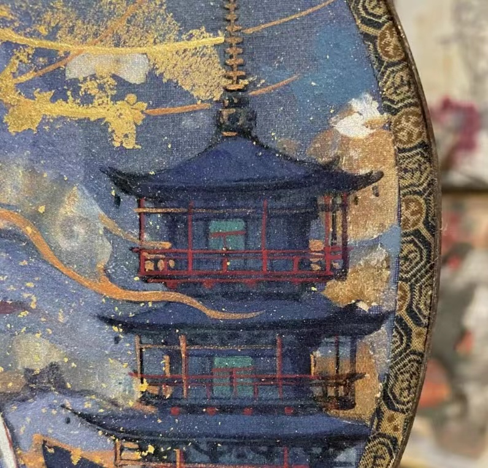
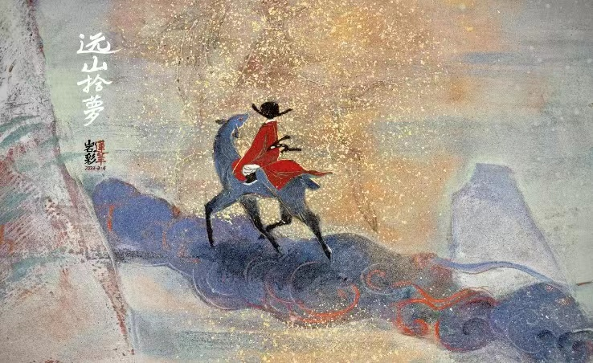
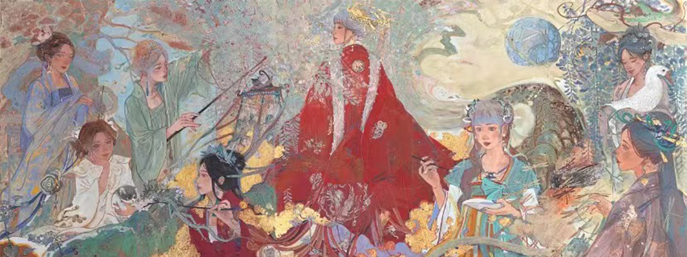

岩彩画
“岩彩画”的出现在我国可追溯至半坡原始古朴的彩陶，马王堆赋彩浓郁的帛画和漆画，鼎盛于唐代的工笔重彩。但是一度被元以后兴起的“文人画”、“水墨画”冲击成为民族的边缘画种。 “岩彩”这一古老而质朴的材质，作为绘画素材源自于原始人类的随意涂抹。
扩展资料 ：中国画的创新 历史悠久的中国画，发展到近现代，出现了与社会发展不相适应的情况，单一的墨色，快速简单的绘制过程已无法表现当今物质丰富、文化多元、城市建设、信息时代的社会生活，于是中国画的创新势在必行，在近现代中国美术史上，中国画创新的问题争论不断。最早提出改革中国画的人是康有为和陈独秀，此后，关于国画创新的争论大致有这么几次： 20年代齐白石的画在北平被一些人贬为“旁门左道”， 40年代末，徐悲鸿在北平艺专执教期间，社会上一些人猛烈评击他的画“不是国画”， 50年代，林风眠的画也被人扣上不像国画的帽子， 60年代初，黄永玉的画被人认为不是国画， 90年代，吴冠中认为中国画笔墨等于零， 实践是检验真理的唯一标准。现在看来，齐白石，徐悲鸿，林风眠，石鲁等人作品，不但是国画，而且是优秀的国画，他们为中国画的发展做出了杰出的贡献。 在国门打开的20年间，中国画家片段式地经受了西方传统和现当代艺术样式的冲击与洗礼，并试着通过借用“他者的眼光”来解决中国画的问题。
- 
- 
- 